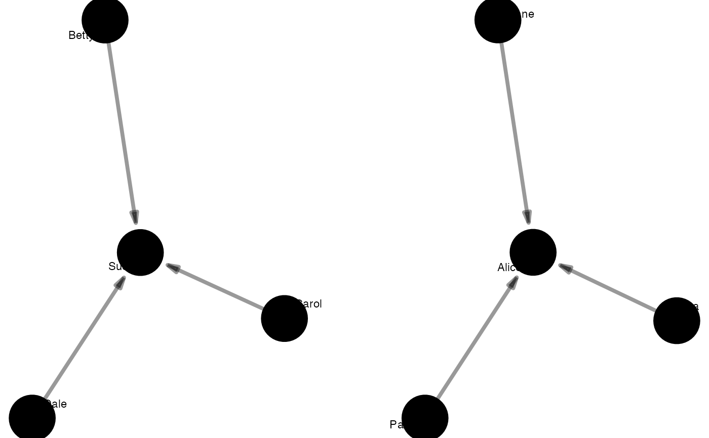

These functions return tidygraphs containing only special sets of ties:
to_matching() returns only the matching ties in some network data.
to_mentoring() returns only ties to nodes' closest mentors.
to_eulerian() returns only the Eulerian path within some network data.
to_tree() returns the spanning tree in some network data or,
if the data is unconnected, a forest of spanning trees.
to_matching(.data, mark = "type")
to_mentoring(.data, elites = 0.1)
to_eulerian(.data)
to_tree(.data)An object of a manynet-consistent class:
matrix (adjacency or incidence) from {base} R
edgelist, a data frame from {base} R or tibble from {tibble}
igraph, from the {igraph} package
network, from the {network} package
tbl_graph, from the {tidygraph} package
A logical vector marking two types or modes. By default "type".
The proportion of nodes to be selected as mentors. By default this is set at 0.1. This means that the top 10% of nodes in terms of degree, or those equal to the highest rank degree in the network, whichever is the higher, will be used to select the mentors.
Note that if nodes are equidistant from two mentors, they will choose one at random. If a node is without a path to a mentor, for example because they are an isolate, a tie to themselves (a loop) will be created instead. Note that this is a different default behaviour than that described in Valente and Davis (1999).
All to_ functions return an object of the same class as that provided.
So passing it an igraph object will return an igraph object
and passing it a network object will return a network object,
with certain modifications as outlined for each function.
Not all functions have methods available for all object classes. Below are the currently implemented S3 methods:
| data.frame | igraph | matrix | network | tbl_graph | |
| to_eulerian | 0 | 1 | 0 | 0 | 1 |
| to_matching | 1 | 1 | 1 | 1 | 1 |
| to_mentoring | 0 | 1 | 0 | 0 | 1 |
to_matching()to_matching() uses {igraph}'s max_bipartite_match()
to return a network in which each node is only tied to
one of its previous ties.
The number of these ties left is its cardinality,
and the algorithm seeks to maximise this such that,
where possible, each node will be associated with just one
node in the other mode or some other mark.
The algorithm used is the push-relabel algorithm
with greedy initialization and a global relabelling
after every \(\frac{n}{2}\) steps,
where \(n\) is the number of nodes in the network.
Goldberg, A V; Tarjan, R E (1986). "A new approach to the maximum flow problem". Proceedings of the eighteenth annual ACM symposium on Theory of computing – STOC '86. p. 136. doi:10.1145/12130.12144
Valente, Thomas, and Rebecca Davis. 1999. "Accelerating the Diffusion of Innovations Using Opinion Leaders", Annals of the American Academy of Political and Social Science 566: 56-67.
Other modifications:
add_nodes(),
add_ties(),
as(),
from,
manip_correlation,
manip_permutation,
manip_split,
miss,
reformat,
to_levels,
to_project,
to_scope
to_matching(ison_southern_women)
#> # A labelled, two-mode network with 32 nodes and 14 ties
#> # A tibble: 32 × 2
#> name type
#> <chr> <lgl>
#> 1 Evelyn FALSE
#> 2 Laura FALSE
#> 3 Theresa FALSE
#> 4 Brenda FALSE
#> 5 Charlotte FALSE
#> 6 Frances FALSE
#> # ℹ 26 more rows
#> # A tibble: 14 × 2
#> from to
#> <int> <int>
#> 1 1 19
#> 2 2 20
#> 3 3 21
#> 4 4 22
#> 5 5 23
#> 6 6 24
#> # ℹ 8 more rows
#graphr(to_matching(ison_southern_women))
graphr(to_mentoring(ison_adolescents))

to_eulerian(delete_nodes(ison_koenigsberg, "Lomse"))
#> IGRAPH ac5d9fc DN-- 3 4 --
#> + attr: name (v/c)
#> + edges from ac5d9fc (vertex names):
#> [1] Altstadt->Kneiphof Kneiphof->Vorstadt Vorstadt->Kneiphof Kneiphof->Altstadt
#graphr(to_eulerian(delete_nodes(ison_koenigsberg, "Lomse")))